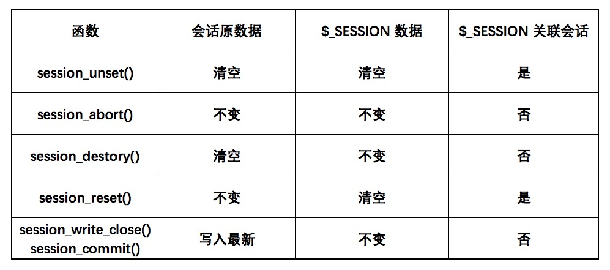
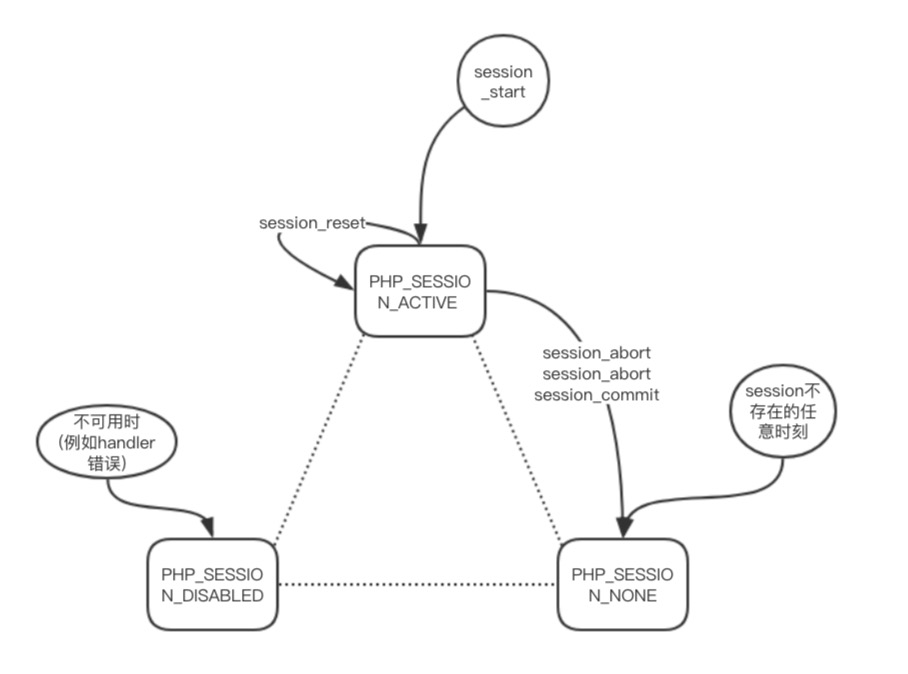

session 启动
php 在默认一开始不启动 session，可以在 php.ini 中配置 session.auto_start 打开自动启动 session。
也可以使用 session_start() 函数。session_start()会创建新会话或者重用现有会话。 如果通过 GET 或者 POST 方式，或者使用 cookie 提交了会话 ID， 则会重用现有会话。
不过要注意，如果使用了 cookie 来保持会话，那 session_start() 一定要在内容输出前调用，除非你使用了输出缓存。因为 session_start() 会设置 header，这跟 header() 方法的调用原则一致。会话使用的 cookie 可以通过 session_set_cookie_params() 或者 session.cookie_lifetime, session.cookie_path, session.cookie_domain, session.cookie_secure, session.cookie_httponly 这5个PHP 选项来设置。
session 开始后，PHP 内部会调用会话管理器的 open 和 read 回调函数。 会话管理器可能是 PHP 默认的， 也可能是扩展提供的，也可能是通过 session_set_save_handler 设定的用户自定义会话管理器。
如果启用了 session.use_trans_sid 选项，session_start 函数会注册一个内部输出管理器， 该输出管理器完成 URL 重写的工作。这个选项一般在无法使用 cookie 的场景。
PHP 默认的会话管理器是 files 文件处理器，默认的路径是 /tmp，它会在 /tmp 路径下创建一个名为会话id的文件，文件中存储的是 PHP $_SESSION 数组序列化后内容。同样，读取时先反序列化，然后初始化 $_SESSION 超全局变量。
session_start() 可以接受一个 array $options 的参数，用来设置选项，此时可以不用 session. 这个前缀。但是要注意每个配置的的指令作用域，例如 auto_start 就无法在其中设置，当然本身逻辑也说不通。设置的详情请查看 PHP Session 选项。
session 使用
PHP 中使用 session 可以直接访问超全局变量 $_SESSION，
$_SESSION 中能放任意类型变量，但是需要 PHP 序列化，或者是用户自定义的会话处理器支持存储读取等，才能正常的使用会话存储这些变量内容。
session.serialize_handler 的选项可以设置序列化处理器，当前支持 php_serialize，php，php_binary，WDDX
session 销毁
可以unset($_SESSION[‘foo’]) 来释放某个值。要注意的是，session 启动以后 $_SESSION 变量才会影响会话里记录的值。
session_unset() 可以用来释放所有的会话变量。千万不要使用 unset($_SESSION) 来释放，虽然 $_SESSION 还可以继续使用，但是已经不再影响会话的记录了。
PHP 中可以关闭或者取消 session 有五个方法，每个方法的作用不同，对比如下

session_unset() 只是清空数据，可以继续使用会话，session_abort() 暂停使用会话，但是数据并不改变，
session_destory() 销毁会话，数据不可用，会话也不可用，session_reset() 重置当前的 $_SESSION 为原会话数据，session_write_close()/session_commit() 是把数据写入会话，并关闭当前会话。
session 状态
PHP 在处理会话时，使用了三个状态
- PHP_SESSION_DISABLED 会话是被禁用的。
- PHP_SESSION_NONE 会话是启用的，但不存在当前会话。
- PHP_SESSION_ACTIVE 会话是启用的，而且存在当前会话。
PHP_SESSION_DISABLED 这个状态比较特殊，一般只有在会话处理器出现了问题才会出现，所以这个状态也代表着当前没有办法打开一个会话。
PHP_SESSION_NONE 代表着会话功能正常，但是并没有启用，所以此时 $_SESSION 变量可有可无，并且不关联会话。
PHP_SESSION_ACTIVE 此时会话正常，在调用 session_start() 后(或者自动启动)进入此状态，$_SESSION 与会话联动，可以保存会话数据。
用状态度大概的表示如下
